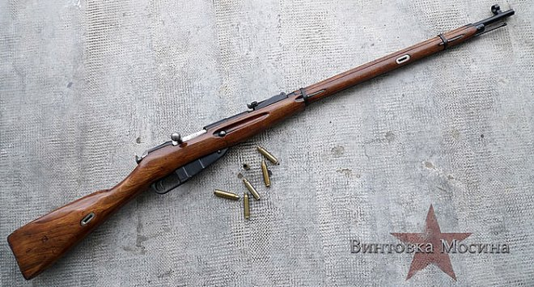
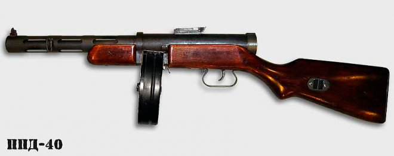
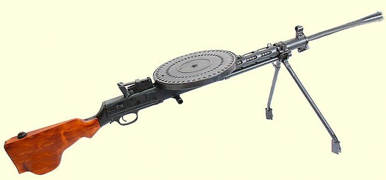
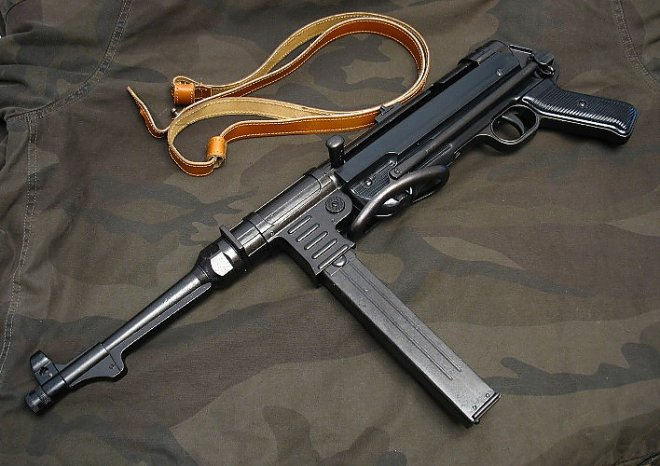

Трехлинейка Мосина
Основным стрелковым оружием пехотных частей СССР первого периода войны безусловно была прославленная трехлинейка — 7,62 мм винтовка С. И. Мосина образца 1891 г. модернизированная в 1930 г. Ее достоинства хорошо известны — прочность, надежность, неприхотливость в обслуживании в сочетании с хорошими баллистическими качествами, в частности, с прицельной дальностью — 2 км.
Трехлинейка – идеальное оружие для вновь призванных солдат, а простота конструкции создавала огромные возможности для ее массового производства. Но как любое оружие, трехлинейка имела недостатки. Постоянно примкнутый штык в сочетании с длинным стволом (1670 мм) создавали неудобства при передвижении, особенно в лесистой местности. Серьезные нарекания вызывала рукоятка затвора при перезарядке.
На ее базе была создана снайперская винтовка и серия карабинов образца 1938 и 1944 года. Судьба отмерила трехлинейке долгий век (последняя трехлинейка была выпущена в 1965 г.), участие во многих войнах и астрономический «тираж» в 37 млн. экземпляров.
ППД-40
Перед создателем ППШ-40 – конструктором Георгием Семеновичем Шпагиным стояла задача разработать предельно простое в эксплуатации, надежное, технологичное, дешевое в производстве массовое оружие.
От своего предшественника – ППД-40, ППШ унаследовал барабанный магазин на 71 патрон. Чуть позже для него был разработан более простой и надежный секторный рожковый магазин на 35 патронов. Масса снаряженных автоматов (оба варианта) составляла соответственно 5,3 и 4,15 кг. Скорострельность ППШ-40 достигала 900 выстрелов в минуту с прицельной дальностью до 300 метров и с возможностью вести одиночную стрельбу.
Для освоения ППШ-40 достаточно было нескольких занятий. Он легко разбирался на 5 частей, изготовленных методом штамповочно-сварной технологии, благодаря чему за годы войны советская оборонка выпустила около 5,5 млн. автоматов.
Ручной пулемет ДП-27
К началу войны ручной пулемет ДП-27 (Дегтярев пехотный, кал 7.62мм) стоял на вооружении Красной Армии почти 15 лет, имея статус основного ручного пулемета пехотных частей. Его автоматика приводилась в действие энергией пороховых газов. Газовый регулятор надежно предохранял механизм от загрязнений и высоких температур.
ДП-27 мог вести только автоматический огонь, но даже новичку достаточно было нескольких дней для того, чтобы освоить стрельбу короткими очередями по 3-5 выстрелов. Боекомплект из 47 патронов размещался в дисковом магазине пулей к центру в один ряд. Сам магазин крепился сверху ствольной коробки. Масса неснаряженного пулемета составляла 8,5 кг. Снаряженный магазин увеличивал ее еще почти на 3 кг.
Это было мощное оружие с прицельной дальностью 1,5 км и боевой скорострельностью до 150 выстрелов в минуту. В боевом положении пулемет опирался на сошки. На конце ствола навинчивался пламегаситель, значительно уменьшающий его демаскирующее действие. ДП-27 обслуживался стрелком и его помощником. Всего было выпущено около 800 тыс. пулеметов.
Автомат MP-40 «Шмайссер»
Пожалуй, самым известным стрелковым оружием Вермахта времен Второй мировой войны стал знаменитый пистолет-пулемет МР-40, модификация его предшественника – МР-36, созданного Генрихом Фольмером. Однако волею судеб он больше известен под именем «шмайссер», полученным, благодаря штампу на магазине – «PATENT SCHMEISSER». Клеймо просто означало, что кроме Г. Фольмера в создании МР-40 участвовал и Хуго Шмайссер, но только как создатель магазина.
Изначально МР-40 предназначался для вооружения командного состава пехотных частей, однако позже его передали в распоряжение танкистов, водителей бронемашин, парашютистов-десантников и бойцов спецподразделений.
Однако для пехотных частей МР-40 абсолютно не годился, поскольку был оружием исключительно ближнего боя. В ожесточенном сражении на открытой местности иметь оружие с дальностью стрельбы от 70 до 150 метров означало для немецкого солдата быть практически безоружным перед своим противником, вооруженным винтовками Мосина и Токарева с дальностью стрельбы от 400 до 800 метров.